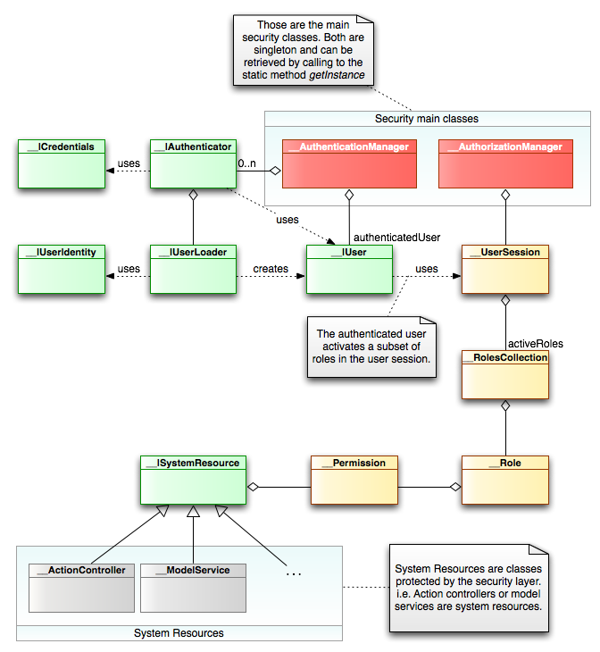

<table cellpadding="10" cellspacing="0" width="100%" border="0"><tr><td valign="top">
<div><a name=""></a><h1>Security in Lion</h1>
  <div class="ref-purpose">Authentication and Authorization</div>
 <div class="ref-synopsis"></div>
<h2>Table of Contents</h2>
<ul>

<a href="../Security/tutorial_Security.pkg.html#iaa">What's Security?</a><br />

<a href="../Security/tutorial_Security.pkg.html#security_in_lion">Security in Lion</a><br />

&nbsp;&nbsp;&nbsp;<a href="../Security/tutorial_Security.pkg.html#security_in_lion.authentication">Authentication</a><br />

&nbsp;&nbsp;&nbsp;<a href="../Security/tutorial_Security.pkg.html#security_in_lion.authorization">Authorization</a><br />
</ul>

 <p></p>
 <span><a name="iaa"></a><h2>What's Security?</h2><p><strong>Security</strong> is the mechanism to restrict the access to certain system resources to some users.<br />
  i.e. To allow the access to administrative pages just to users with administrative privileges.</p>
  <p>Security comprises two major operations: The Authentication and the Authorization.</p>
  <p><strong>Authentication</strong> is the process of confirming who someone is or what something is, it is, confirm a claimed identity.<br />
  For example, motorists identify themselves to police by presenting a driver's license. Police compare the photo and description on the driver's license with the motorist to authenticate identity.</p>
  <p><strong>Authorization</strong> is the act of granting permission for someone or something to conduct an act. Even when identity and authentication have indicated who someone is, authorization may be needed to establish what he or she is allowed to do.</p></span>
 <span><a name="security_in_lion"></a><h2>Security in Lion</h2><p>As part of the lion framework, there is a layer to support the security principles described abobe.<br />
  The followin diagram shows the main classes and relationships that belong to this layer:</p>
  
  <p>The most fundamental classes here are both the <a href="../Security/__AuthenticationManager.html">__AuthenticationManager</a> and <a href="../Security/__AuthorizationManager.html">__AuthorizationManager</a>.<br />
  The <a href="../Security/__AuthenticationManager.html">__AuthenticationManager</a> is the one in charge of the authentication management while the <a href="../Security/__AuthorizationManager.html">__AuthorizationManager</a> is the one in charge of the authorization management (just read the class names :).</p>
  <p>As you can see in the diagram, there are several interfaces (the ones with the prefix __I, like __ICredentials, __IAuthenticator, ...). Lion allows to specify declarativelly which classes will be used for each interface. This capability allows to customize/extend the security layer without altering the root behaviour.</p>
  <a name="security_in_lion.authentication"></a><h3>Authentication</h3><p>The <a href="../Security/__AuthenticationManager.html">__AuthenticationManager</a> main task is to perform the user logon. To make it happens, it exposes the method <a href="../Security/__AuthenticationManager.html#methodlogon">__AuthenticationManager::logon()</a>.</p>
    <p>The <a href="../Security/__AuthenticationManager.html">__AuthenticationManager</a> has a set of authenticators (classes implementing the <a href="../Security/__IAuthenticator.html">__IAuthenticator</a>). To perform the logon, it delegates to each one until the user is successfully authenticated. The authentication fails if all the authenticators fail.<br />
    Once it occurs, the user instance is stored in the <a href="../Security/__AuthenticationManager.html">__AuthenticationManager</a>. It also activate some roles in the <a href="../Security/__UserSession.html">__UserSession</a>.</p>
    <p><a href="../Security/__AuthenticationManager.html#methodlogout">__AuthenticationManager::logout()</a> just unset the authenticated user from <a href="../Security/__AuthenticationManager.html">__AuthenticationManager</a>. Also unset the active roles from the <a href="../Security/__UserSession.html">__UserSession</a>.</p>
    <p>For more information regarding the authentication, see the <a href="../Security/tutorial_Authentication.pkg.html">Authentication in Lion</a> section.</p><br />
  <a name="security_in_lion.authorization"></a><h3>Authorization</h3><p>The <a href="../Security/__AuthorizationManager.html">__AuthorizationManager</a> main task is to check if the authenticated user has permission to access to each system resource.<br />
    The most important thing to know is the fact that the <a href="../Security/__AuthorizationManager.html">__AuthorizationManager</a> does not check the permissions associated to the already authenticated user, but the ones stored in the <a href="../Security/__UserSession.html">__UserSession</a>.</p>
    <p>For more information regarding the authorization, see the <a href="../Security/tutorial_Authorization.pkg.html">Authorization in Lion</a> section.</p><br /></span></div>
      </td></tr></table>